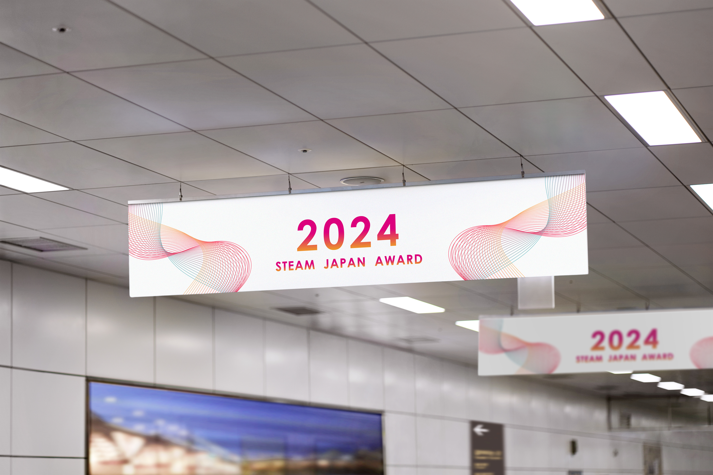
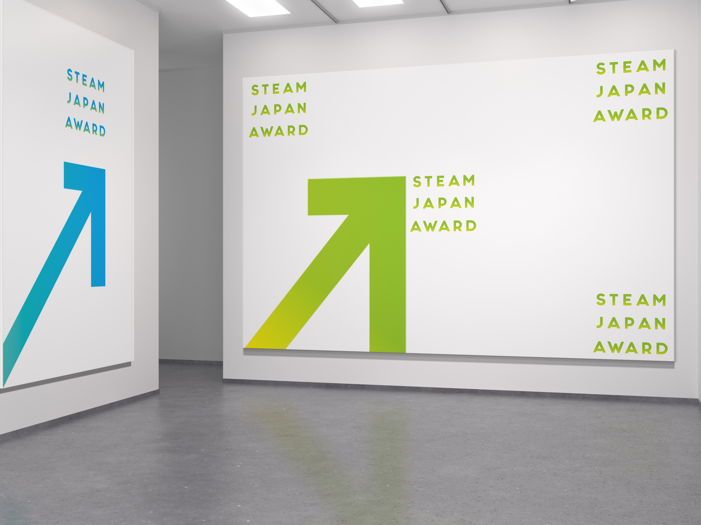

Arrow
The rising arrow becomes the core gesture, giving the award a direct symbol for progress and momentum.
An award identity system built from upward arrows, bright gradients, and public-space applications for the 2024 STEAM Japan Award.
The rising arrow becomes the core gesture, giving the award a direct symbol for progress and momentum.
Wall graphics, station signage, and public displays scale the identity from close reading to distant navigation.
Color shifts and large typography make the system feel celebratory while staying clear in transit and outdoor contexts.

